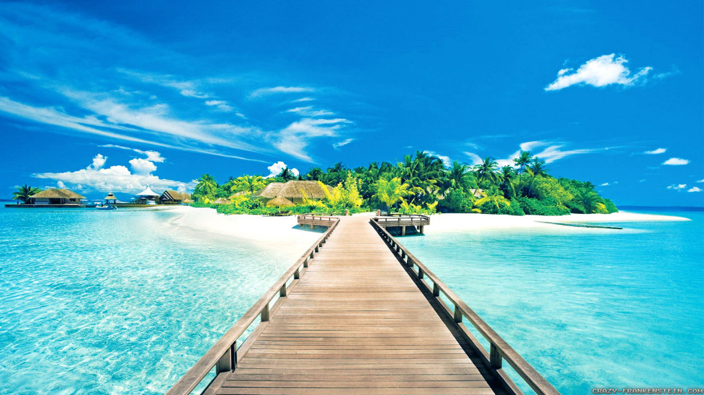
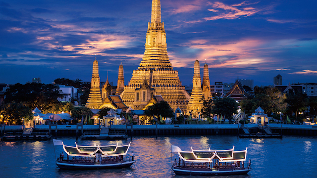
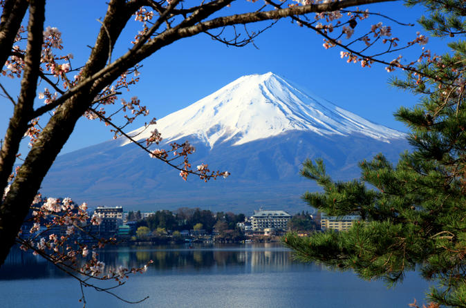
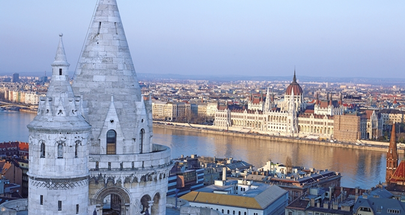
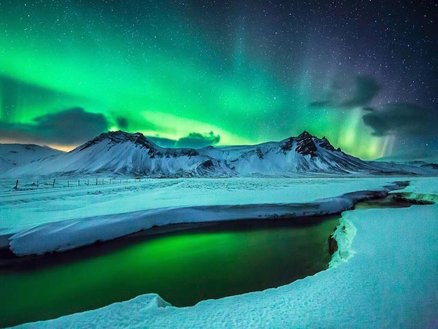
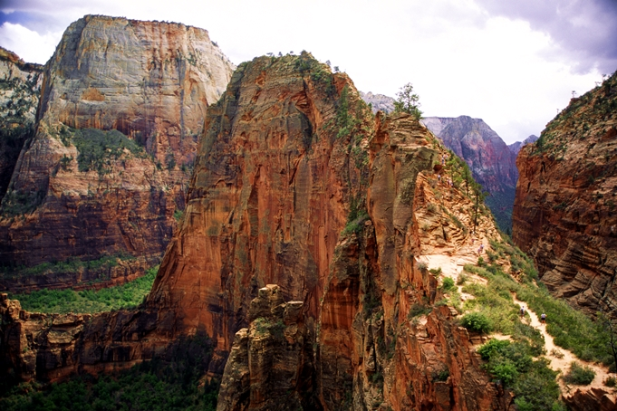
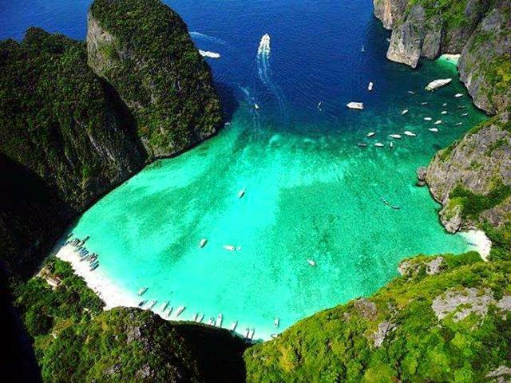
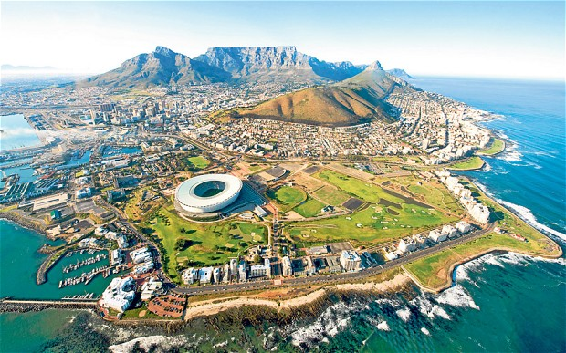

Top 10 Vacation Spots
Bangkok

Bangkok (English pronunciation: /ˈbæŋkɒk/[5]) is the capital and most populous city of Thailand. It is known in Thai as Krung Thep Maha Nakhon (กรุงเทพมหานคร, pronounced [krūŋ tʰêːp mahǎː nákʰɔ̄ːn] ( listen)) or simply About this sound Krung Thep (help·info). The city occupies 1,568.7 square kilometres (605.7 sq mi) in the Chao Phraya River delta in Central Thailand, and has a population of over 8 million, or 12.6 percent of the country's population. Over 14 million people (22.2 percent) live within the surrounding Bangkok Metropolitan Region, making Bangkok an extreme primate city, dwarfing Thailand's other urban centres in terms of importance.
More information
Istanbul
 Istanbul (/ˌɪstænˈbuːl/ or /ˌiːstɑːnˈbuːl/;[8][9] Turkish: İstanbul [isˈtanbuɫ] ( listen)), historically also known as Constantinople and Byzantium, is the most populous city in Turkey and the country's economic, cultural, and historic center. Istanbul is a transcontinental city in Eurasia, straddling the Bosphorus strait between the Sea of Marmara and the Black Sea. Its commercial and historical center lies on the European side and about a third of its population lives on the Asian side.[10] The city is the administrative center of the Istanbul Metropolitan Municipality (coterminous[11] with Istanbul Province), both hosting a population of around 14 million residents.[4] Istanbul is one of the world's most populous cities and ranks as world's 5th-largest city proper and the largest European city.
More information
Istanbul (/ˌɪstænˈbuːl/ or /ˌiːstɑːnˈbuːl/;[8][9] Turkish: İstanbul [isˈtanbuɫ] ( listen)), historically also known as Constantinople and Byzantium, is the most populous city in Turkey and the country's economic, cultural, and historic center. Istanbul is a transcontinental city in Eurasia, straddling the Bosphorus strait between the Sea of Marmara and the Black Sea. Its commercial and historical center lies on the European side and about a third of its population lives on the Asian side.[10] The city is the administrative center of the Istanbul Metropolitan Municipality (coterminous[11] with Istanbul Province), both hosting a population of around 14 million residents.[4] Istanbul is one of the world's most populous cities and ranks as world's 5th-largest city proper and the largest European city.
More information
London
 London Listeni/ˈlʌndən/ is the capital and most populous city of England and the United Kingdom.[3][4] Standing on the River Thames, London has been a major settlement for two millennia, its history going back to its founding by the Romans, who named it Londinium.[5] London's ancient core, the City of London, largely retains its 1.12-square-mile (2.9 km2) medieval boundaries and in 2011 had a resident population of 7,375, making it the smallest city in England. Since at least the 19th century, the term London has also referred to the metropolis developed around this core.[6] The bulk of this conurbation forms Greater London,[7][8][note 1] a region of England governed by the Mayor of London and the London Assembly.[9][note 2] The conurbation also covers two English counties: the small district of the City of London and the county of Greater London. The latter constitutes the vast majority of London,[10] though historically it was split between Middlesex (a now abolished county), Essex, Surrey, Kent and Hertfordshire.
More information
London Listeni/ˈlʌndən/ is the capital and most populous city of England and the United Kingdom.[3][4] Standing on the River Thames, London has been a major settlement for two millennia, its history going back to its founding by the Romans, who named it Londinium.[5] London's ancient core, the City of London, largely retains its 1.12-square-mile (2.9 km2) medieval boundaries and in 2011 had a resident population of 7,375, making it the smallest city in England. Since at least the 19th century, the term London has also referred to the metropolis developed around this core.[6] The bulk of this conurbation forms Greater London,[7][8][note 1] a region of England governed by the Mayor of London and the London Assembly.[9][note 2] The conurbation also covers two English counties: the small district of the City of London and the county of Greater London. The latter constitutes the vast majority of London,[10] though historically it was split between Middlesex (a now abolished county), Essex, Surrey, Kent and Hertfordshire.
More information
Tokyo

Tokyo (東京 Tōkyō?, "Eastern Capital") (Japanese: [toːkjoː] ( listen), English /ˈtoʊki.oʊ/), officially Tokyo Metropolis (東京都 Tōkyō-to?),[4] is one of the 47 prefectures of Japan,[5] and is both the capital and largest city of Japan. The Greater Tokyo Area is the most populous metropolitan area in the world.[6] It is the seat of the Emperor of Japan and the Japanese government. Tokyo is in the Kantō region on the southeastern side of the main island Honshu and includes the Izu Islands and Ogasawara Islands.[7] Formerly known as Edo, it has been the de facto seat of government since 1603 when Shogun Tokugawa Ieyasu made the city his headquarters. It officially became the capital after Emperor Meiji moved his seat to the city from the old capital of Kyoto in 1868; at that time Edo was renamed Tokyo. Tokyo Metropolis was formed in 1943 from the merger of the former Tokyo Prefecture (東京府 Tōkyō-fu?) and the city of Tokyo (東京市 Tōkyō-shi?).
More information
Budapest

Budapest[8] (Hungarian: [ˈbudɒpɛʃt] ( listen); names in other languages) is the capital and the largest city of Hungary,[9] and one of the largest cities[10] in the European Union. It is the country's principal political, cultural, commercial, industrial, and transportation centre,[11] sometimes described as the primate city of Hungary.[12] According to the census, in 2011 Budapest had 1.74 million inhabitants,[13] down from its 1989 peak of 2.1 million[14] due to suburbanisation.[15] The Budapest Metropolitan Area is home to 3.3 million people.[16][17] The city covers an area of 525 square kilometres (202.7 sq mi).[18] Budapest became a single city occupying both banks of the river Danube with the unification of Buda and Óbuda on the west bank, with Pest on the east bank on 17 November 1873.[18][19]
More information
Angle Falls, Argentina
 Angel Falls (Spanish: Salto Ángel; Pemon language: Kerepakupai Vená, meaning "waterfall of the deepest place", or Parakupá Vená, meaning "the fall from the highest point") is a waterfall in Venezuela. It is the world's highest uninterrupted waterfall, with a height of 979 metres (3,212 ft) and a plunge of 807 metres (2,648 ft). The waterfall drops over the edge of the Auyantepui mountain in the Canaima National Park (Spanish: Parque Nacional Canaima), a UNESCO World Heritage site in the Gran Sabana region of Bolívar State. The height figure 979 metres (3,212 ft) mostly consists of the main plunge but also includes about 400 metres (0.25 mi) of sloped cascades and rapids below the drop and a 30-metre (98 ft) high plunge downstream of the talus rapids.
More information
Angel Falls (Spanish: Salto Ángel; Pemon language: Kerepakupai Vená, meaning "waterfall of the deepest place", or Parakupá Vená, meaning "the fall from the highest point") is a waterfall in Venezuela. It is the world's highest uninterrupted waterfall, with a height of 979 metres (3,212 ft) and a plunge of 807 metres (2,648 ft). The waterfall drops over the edge of the Auyantepui mountain in the Canaima National Park (Spanish: Parque Nacional Canaima), a UNESCO World Heritage site in the Gran Sabana region of Bolívar State. The height figure 979 metres (3,212 ft) mostly consists of the main plunge but also includes about 400 metres (0.25 mi) of sloped cascades and rapids below the drop and a 30-metre (98 ft) high plunge downstream of the talus rapids.
More information
Iceland

Iceland (Listeni/ˈaɪslænd/; Icelandic: Ísland [ˈistlant]), also called the Republic of Iceland,[Note 1] is a Nordic island country between the North Atlantic and the Arctic Ocean. It has a population of 329,100 and an area of 103,000 km2 (40,000 sq mi), making it the most sparsely populated country in Europe.[7] The capital and largest city is Reykjavík. Reykjavík and the surrounding areas in the southwest of the country are home to over two-thirds of the population. Iceland is volcanically and geologically active. The interior consists of a plateau characterised by sand and lava fields, mountains and glaciers, while many glacial rivers flow to the sea through the lowlands. Iceland is warmed by the Gulf Stream and has a temperate climate, despite a high latitude just outside the Arctic Circle. Its high latitude and marine influence still keeps summers chilly, with most of the archipelago having a tundra climate.
More information
Zion National Park, Utah

Zion National Park is located in the Southwestern United States, near Springdale, Utah. A prominent feature of the 229-square-mile (590 km2) park is Zion Canyon, which is 15 miles (24 km) long and up to half a mile (800 m) deep, cut through the reddish and tan-colored Navajo Sandstone by the North Fork of the Virgin River. The lowest elevation is 3,666 ft (1,117 m) at Coalpits Wash and the highest elevation is 8,726 ft (2,660 m) at Horse Ranch Mountain. Located at the junction of the Colorado Plateau, Great Basin, and Mojave Desert regions, the park's unique geography and variety of life zones allow for unusual plant and animal diversity. Numerous plant species as well as 289 species of birds, 75 mammals (including 19 species of bat), and 32 reptiles inhabit the park's four life zones: desert, riparian, woodland, and coniferous forest. Zion National Park includes mountains, canyons, buttes, mesas, monoliths, rivers, slot canyons, and natural arches.
More information
Koh Phi Phi, Thailand

The Phi Phi Islands (Thai: หมู่เกาะพีพี, Thai pronunciation: [pʰīː pʰīː]) are in Thailand, between the large island of Phuket and the west Strait of Malacca coast of the mainland. The islands are administratively part of Krabi province. Ko Phi Phi Don ("ko" (Thai: เกาะ) meaning "island" in the Thai language) is the largest island of the group, and is the most populated island of the group, although the beaches of the second largest island, Ko Phi Phi Lee (or "Ko Phi Phi Leh"), are visited by many people as well. The rest of the islands in the group, including Bida Nok, Bida Noi, and Bamboo Island (Ko Mai Phai), are not much more than large limestone rocks jutting out of the sea. The Islands are reachable by speedboats or Long-tail boats most often from Krabi Town or from various piers in Phuket Province.
More information
Cape Town, South Africa

Cape Town (Afrikaans: Kaapstad [ˈkɑːpstɐt]; Xhosa: Ikapa) is a city in South Africa. It ranks third among the most populous urban areas in South Africa, after Johannesburg and Durban, and has roughly the same population as the Durban Metropolitan Area.[5] It is also the provincial capital and primate city of the Western Cape. It is the southernmost city on the African continent.[6]
More information